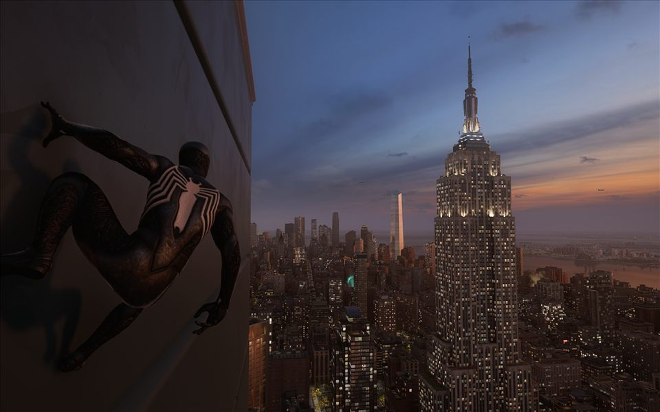

World 08 / New York, again
Marvel’s Spider-Man 2
Familiar streets at a different pace, with more of the city waiting beyond the skyline.

World 08 / New York, again
Familiar streets at a different pace, with more of the city waiting beyond the skyline.